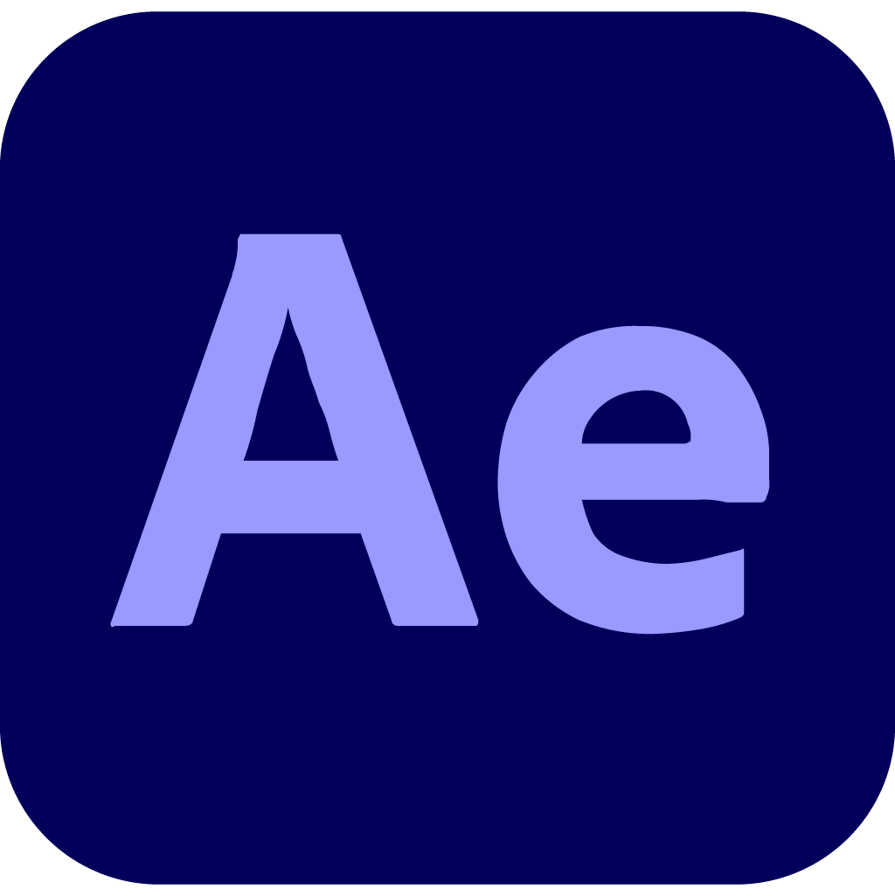

Skills




暇さえあればゲームしてます。
任天堂のゲームが一番好きだけど、他のゲームもめっちゃしてます。
授業で作ったフル3DCGのアニメーション作品です。Louie Zong氏の「Hello, World」という曲を原作にアニメーションを作ってみました。
理想の自分の部屋をblenderを用いて表現しました。高校生の時に作ったにしては結構完成度高いと思います。
スーパーマリオワールド(SFC)に登場する1UPキノコを3D化し、エフェクトとアニメーションをつけて動画を作ってみました。元々は2Dのドット絵で、公式に3Dドット化されたことも無かったので、自分で想像しながら作りました。